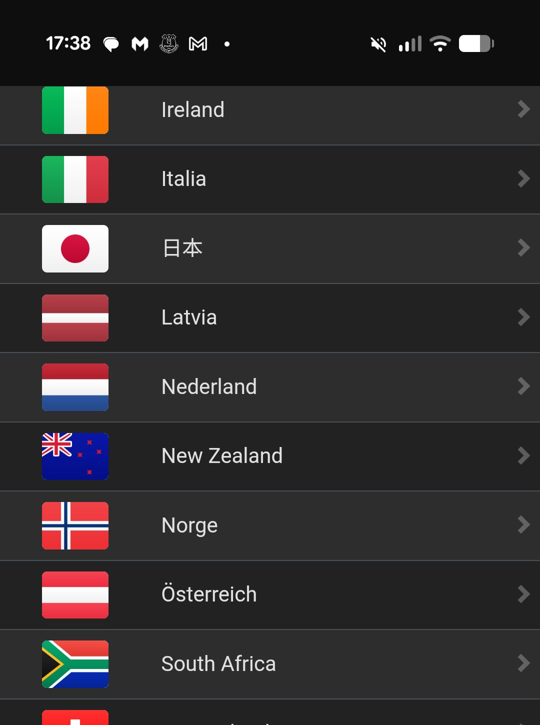
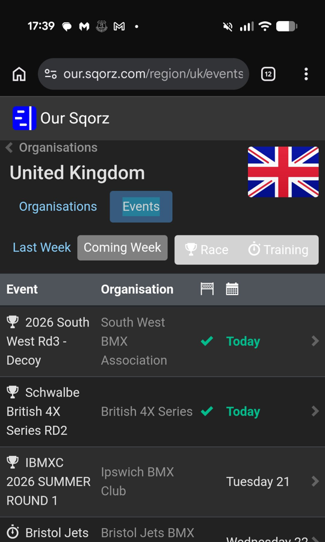
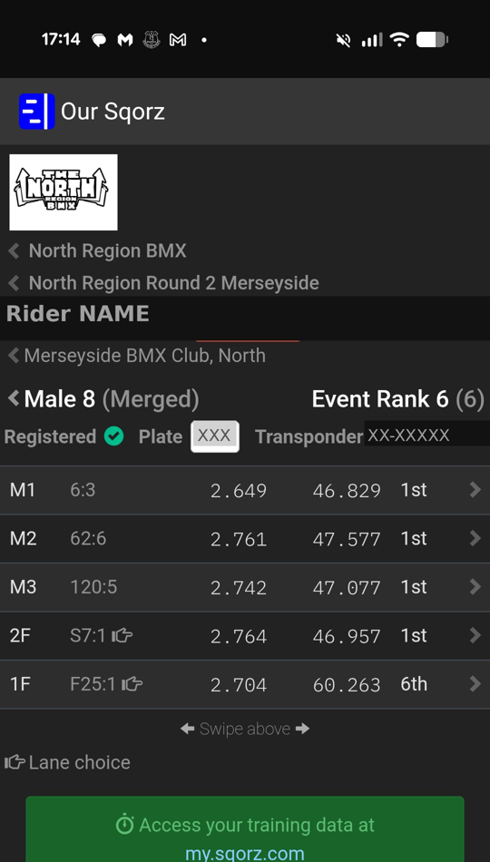

Everything you need to know about race day. How the day flows, the format, Sqorz, the pens and the start gate. Read this before your first race and keep it handy on the day.
Race days follow a similar structure at most UK BMX events. Here is a high level view of what to expect from arrival to the final.
Most race meets include practice time before racing begins. The format varies by event so always check the programme on the day.
All riders from all age groups on the track at the same time. Your chance to ride the full course, get comfortable with the surface and warm up. Keep your head up and be aware of other riders around you.
Track split into time slots by age group for a less crowded session. Not all events run age group practice. Check the event programme to see when your rider's group is on.
All riders start in the Motos and then progress through further rounds depending on how many riders are in their class.
Each stage has different stakes. Here is what to expect at each one.
After each moto, riders earn points based on finishing position. These are added up across all three motos. Lower total is better — 1st, 2nd and 2nd scores 5 points, which beats 2nd, 3rd and 4th (9 points).
Sqorz is the live results system used at most UK BMX races. Race numbers, gate draws, results and standings all live here. No app needed — open a browser and go to our.sqorz.com.
There is no top level search. Browse by country then organisation to find your event.



The number before the colon is your race number. After the colon is your gate. The pen number is always the last digit of the race number — this applies to motos, semis and finals.
| SQORZ DISPLAY | WHAT IT MEANS | PEN TO GO TO | GATE |
|---|---|---|---|
| 46:3 | Race 46, Gate 3 | Pen 6 | Gate 3 |
| 124:5 | Race 124, Gate 5 | Pen 4 | Gate 5 |
| S9:1 | Semi Final 9, Gate 1 | Pen 9 | Gate 1 |
| F6:3 | Final 6, Gate 3 | Pen 6 | Gate 3 |
| F43:2 | Final 43, Gate 2 | Pen 3 | Gate 2 |
The pens are the staging area at the back of the start hill where riders wait before heading to the gate. Knowing how to find your pen makes race day much less stressful.
The pen number is always the last digit of your race number. This applies to motos, semis and finals.
Once riders are called to the gate, the automated start sequence begins. Here is exactly what the rider will hear.
Screenshot this or print it off. Nothing worse than arriving and realising you have forgotten something.
Quick reference for the terms you will hear on race day.
Any questions on race day, speak to a club volunteer. We are always there to help.
Contact the Club →